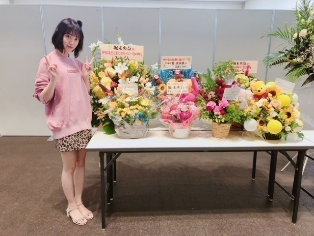

2018/0813Mon甘さが勝つの。
アップルパイのはなし！
最近食べたアップルパイは
酸っぱさよりも甘さを凄く感じました
甘党じゃないけど品のある甘さは
たまの幸せだな〜って。
さてさて
京都での個別握手会、
ありがとうございました！
帰りにほうじ茶アイス食べたけど
日本茶は改めてステキなものだと確信しました。
調子に乗って1部からたくさん話していたら
親知らずが完治していなくて激痛で...
ご心配をおかけしました> <

ファンの女の子がお花と一緒にくれたくまさん
名前はね、うーん
何にしようかな
モルディブちゃん！
笑
SNIDELさんの新作の
スウェットとスカート
一目惚れしました
お気に入り！

夏はぴたっと。秋冬はゆるっと。が好き
サンダルはMorie femme
シルバーグレーで使いやすくて
よく履いています☆☆

お花も

たくさんありがとうございました！

今週の水曜日レコメン！は
のりさんがお休みの為
絢音と2人のすずほりコンビでお届けします♡
楽しみ
完全に素だろうなぁ。笑
聞いてくださいね〜
では！
2018/08/13 17:30
コメント(485)
みおなブログ更新ありがとーー！
京都個握おつかれさま！
京都個握おつかれさま！
未央奈～☆☆
今週のレコメンはすずほりコンビなんだー
いやー、素なんだろうね～笑
そこが、めっちゃ楽しみ！
レコメン聞くからね～
それにしても、未央奈の笑顔、本当に可愛いなー
親知らずが完治していないなんて、全く感じさせない
未央奈の魅力パワーを改めて感じたよ！
本当に素敵すぎて、明後日も頑張れる。
今週のレコメンはすずほりコンビなんだー
いやー、素なんだろうね～笑
そこが、めっちゃ楽しみ！
レコメン聞くからね～
それにしても、未央奈の笑顔、本当に可愛いなー
親知らずが完治していないなんて、全く感じさせない
未央奈の魅力パワーを改めて感じたよ！
本当に素敵すぎて、明後日も頑張れる。
おつかれさま
親知らず早く完治するといいね
そんな中でも頑張ってるのは凄いよ！
今日も頑張ってね
親知らず早く完治するといいね
そんな中でも頑張ってるのは凄いよ！
今日も頑張ってね
お！アップルパイのはなし！
前にブログで言ってた甘すぎないがちょうどいい。の続きだね！
うわぁ、品のある甘さかぁ。なんかかっこいいなぁ。今度使おっと。
甘さが勝つの。なんだかちょっとかわいい気がする。。
(なんでもかわいいと思っちゃうファン
個握お疲れ様です！
親知らず早く完治してほしい！！
マスクをしてたみたいでちょっと心配してたんだけどなんだか元気そうでほっとしてまする。(๑˃̵ᴗ˂̵)♪
おー！ほうじ茶アイス！こっちはこの前京都行ったときに抹茶アイス食べたわ。
あ、これは独り言です。
綺麗な花いっぱいだね！
ぬいぐるみもセットであげてるのかぁ。
モルディブちゃん！笑
モルディブって国の名前よね？最近ちょっと話題の。笑
星の海っていうすごい綺麗なビーチが見れるらしいよ！✨
かわいいスウェット！髪型！
スウェット、品のある甘い色合いだね！
(すーぐ覚えた単語を使いがち。
スカートは大阪っぽい！笑
ほーう。ぴたっと。と、ゆるっと。
良いこと聞いた。
プーさんだぁ！！
ちょ、そんな輝いてる瞳で見つめないで！笑
かわいすぎるから。。どきどき☺︎
すずほり亭楽しみ〜〜⤴︎
もっちろん聴くよ。♡
さっき未央奈が過去のブログを振り返ってたんだけど、こっちもそのときの自分のコメント見てみたら好きなんだなぁ。と思ってなんだかニヤニヤしちゃった。笑
でもそのときよりも今の方が好きな自信あるからね！！それだけは言える！！
ん？例えば？笑
握手会でツボってる未央奈見れたし！大阪ライブで念願のデコ出し見れたし！名古屋ドームへの想いも聞けたし！
そりゃ好きになっちゃうわ！！✋
なんかファンレターもこんな感じだった気がする。笑
まぁ、いっか。
明日からもがんばろー！おぉー！
では！お！や！す！み！(^-^)
前にブログで言ってた甘すぎないがちょうどいい。の続きだね！
うわぁ、品のある甘さかぁ。なんかかっこいいなぁ。今度使おっと。
甘さが勝つの。なんだかちょっとかわいい気がする。。
(なんでもかわいいと思っちゃうファン
個握お疲れ様です！
親知らず早く完治してほしい！！
マスクをしてたみたいでちょっと心配してたんだけどなんだか元気そうでほっとしてまする。(๑˃̵ᴗ˂̵)♪
おー！ほうじ茶アイス！こっちはこの前京都行ったときに抹茶アイス食べたわ。
あ、これは独り言です。
綺麗な花いっぱいだね！
ぬいぐるみもセットであげてるのかぁ。
モルディブちゃん！笑
モルディブって国の名前よね？最近ちょっと話題の。笑
星の海っていうすごい綺麗なビーチが見れるらしいよ！✨
かわいいスウェット！髪型！
スウェット、品のある甘い色合いだね！
(すーぐ覚えた単語を使いがち。
スカートは大阪っぽい！笑
ほーう。ぴたっと。と、ゆるっと。
良いこと聞いた。
プーさんだぁ！！
ちょ、そんな輝いてる瞳で見つめないで！笑
かわいすぎるから。。どきどき☺︎
すずほり亭楽しみ〜〜⤴︎
もっちろん聴くよ。♡
さっき未央奈が過去のブログを振り返ってたんだけど、こっちもそのときの自分のコメント見てみたら好きなんだなぁ。と思ってなんだかニヤニヤしちゃった。笑
でもそのときよりも今の方が好きな自信あるからね！！それだけは言える！！
ん？例えば？笑
握手会でツボってる未央奈見れたし！大阪ライブで念願のデコ出し見れたし！名古屋ドームへの想いも聞けたし！
そりゃ好きになっちゃうわ！！✋
なんかファンレターもこんな感じだった気がする。笑
まぁ、いっか。
明日からもがんばろー！おぉー！
では！お！や！す！み！(^-^)
堀ちゃんお疲れ様です(^^)
個握楽しみ*\(^o^)/*
個握楽しみ*\(^o^)/*
堀さん、こんばんは。
あんまり言ってくるのでアップルパイ食べたくなってきました。前にピザ屋のデザートにアップパイ頼んだらメープルシロップ付いてきて、焼きそばにマヨネーズ以来の衝撃で愕然としたのを思い出しました。
あとモルディブがどこだか検索したらwikiに「島々の花輪」ってありました。洒落た名前の付け方しますね。
ところでボム見ました。何となく白は凛としてオレンジは天真爛漫で青は儚い印象でした。キッチンで振り向いている写真が可愛くて特に好みでした。
レコメン楽しみですけど、ラジオ中も痛まないか気になります。早く完治するように祈ってます。
あんまり言ってくるのでアップルパイ食べたくなってきました。前にピザ屋のデザートにアップパイ頼んだらメープルシロップ付いてきて、焼きそばにマヨネーズ以来の衝撃で愕然としたのを思い出しました。
あとモルディブがどこだか検索したらwikiに「島々の花輪」ってありました。洒落た名前の付け方しますね。
ところでボム見ました。何となく白は凛としてオレンジは天真爛漫で青は儚い印象でした。キッチンで振り向いている写真が可愛くて特に好みでした。
レコメン楽しみですけど、ラジオ中も痛まないか気になります。早く完治するように祈ってます。
親知らずまだ完治してなかったんかーお大事にな
その服装かわいい！めっちゃ似合ってる
ダボダボで下は短いっていうのすごい好き
すずほり楽しみ〜絶対聴く！
その服装かわいい！めっちゃ似合ってる
ダボダボで下は短いっていうのすごい好き
すずほり楽しみ〜絶対聴く！
ブログ更新ありがとう。
昨日の握手会に午後から参加したよ。
以前から関西の個握に数回参加してるけど、未央奈が体調悪い時が多くて、会話ができないケースが多いから今回もめっちゃ残念・・・
関西圏のファンの対応が悪いからかな？
暑い中、全ツが続くけど体調管理に気をつけてね
昨日の握手会に午後から参加したよ。
以前から関西の個握に数回参加してるけど、未央奈が体調悪い時が多くて、会話ができないケースが多いから今回もめっちゃ残念・・・
関西圏のファンの対応が悪いからかな？
暑い中、全ツが続くけど体調管理に気をつけてね
レコメン超楽しみ！
俺は甘いアップルパイ派
ちなみにリンゴが大きくカットされて入ってるの好き好き派♫
モルディブちゃん。すごくお洒落な名前やな（笑）
SNIDELさんの新作のスウェットとスカート、めっちゃ似合ってるやん！そういうスウェット男はめっちゃ好き！
とても可愛いです♫
のりさんお休みの時って、のりさんの代打の芸人さんは来ずに、二人だけでお送りなのな（笑）あ、のりさんの代打で絢音ちゃんが来るのか！（笑）
もう、レコメン乗っ取っちゃえ（笑）
またブログまってるねん！
ちなみにリンゴが大きくカットされて入ってるの好き好き派♫
モルディブちゃん。すごくお洒落な名前やな（笑）
SNIDELさんの新作のスウェットとスカート、めっちゃ似合ってるやん！そういうスウェット男はめっちゃ好き！
とても可愛いです♫
のりさんお休みの時って、のりさんの代打の芸人さんは来ずに、二人だけでお送りなのな（笑）あ、のりさんの代打で絢音ちゃんが来るのか！（笑）
もう、レコメン乗っ取っちゃえ（笑）
またブログまってるねん！
京都の個握お疲れ様でした、これからの頑張る気力を貰えましたありがとうございます
改めて同い年と思えないくらい綺麗でした！
改めて同い年と思えないくらい綺麗でした！
ブログの更新ありがとう！
京都個握お疲れ様！
レコメン楽しみだなー
そこで絢音ちゃんが未央奈と仲良くなれる方法を教えてくれないかなー？
親知らず、早く完治することを願ってます！
京都個握お疲れ様！
レコメン楽しみだなー
そこで絢音ちゃんが未央奈と仲良くなれる方法を教えてくれないかなー？
親知らず、早く完治することを願ってます！
未央ちゃん
ブログ更新ありがとう
アップルパイ好きなの？
甘いの得意じゃないのかな？
焼いたリンゴは
苦手あるある聞くけど
私服ピンク色で
ヒョウ柄のギャップでオシャレだね
レコメンものりさんお休み回
絢音ちゃんと頑張ってね
大丈夫かな～(笑)
楽しみにしてます
ブログ更新ありがとう
アップルパイ好きなの？
甘いの得意じゃないのかな？
焼いたリンゴは
苦手あるある聞くけど
私服ピンク色で
ヒョウ柄のギャップでオシャレだね
レコメンものりさんお休み回
絢音ちゃんと頑張ってね
大丈夫かな～(笑)
楽しみにしてます
握手会行きたかったなー( ´Д`)y━･~~
未央奈ちゃん更新ありがとー！
握手会お疲れ様。
親知らず大丈夫？(>_<)
あまり無理はしないでね。
写真たくさんありがとう！
そのスウェット可愛いね！似合ってる(^_^)
レコメン楽しみにしてるね！
素でいこう！笑
握手会お疲れ様。
親知らず大丈夫？(>_<)
あまり無理はしないでね。
写真たくさんありがとう！
そのスウェット可愛いね！似合ってる(^_^)
レコメン楽しみにしてるね！
素でいこう！笑
未央奈、握手会お疲れ様 ️
毎回握手するたびに癒されてます。
お花の写真ありがとう❤️
次はもう少し大きいの出しますね
乃木恋のリアルイベントは今仕事の予定ですが、何とか調整してあけます。
１位の席を空けるわけにいかないですから。
またお会い出来るの楽しみにしてます
毎回握手するたびに癒されてます。
お花の写真ありがとう❤️
次はもう少し大きいの出しますね
乃木恋のリアルイベントは今仕事の予定ですが、何とか調整してあけます。
１位の席を空けるわけにいかないですから。
またお会い出来るの楽しみにしてます
ブログ更新ありがとうございます！
未央奈ちゃん、オシャレで、素敵です！
これからも応援します！
体に気をつけて頑張ってください！
乃木坂FIGHT
未央奈ちゃん、オシャレで、素敵です！
これからも応援します！
体に気をつけて頑張ってください！
乃木坂FIGHT
未央奈〜♡お疲れ様！
お疲れ様で〜す
少ししか話せなかったけど
楽しかったです‼︎
少ししか話せなかったけど
楽しかったです‼︎
すずほりコンビ大好き!!
けど、ラジオあまり聞かない…
けど、ラジオあまり聞かない…
京都での握手会、ありがとうございました。
未央奈に会えて良かったです。
僕は3部と4部に行って、その時は未央奈はマスクしてて。顔は隠れてたけど元気そうなのは伝わってきました。「めっちゃ調子良いやん」って思いました。
4部のとき、未央奈がくまのぬいぐるみを持ちながら握手してたのには、久しぶりに驚きました笑
だけど、喋れないぶん身振り手振りで伝えようとしていたり、最後まで、剥がされても手を離さず長くいられるようにと時間を作ってくれたことが嬉しかったです。
あっ、でもプーさんのぬいぐるみのポジション直しをしてる時は「相変わらずマイペースやんなー。こだわるなー」って思いながら、その様子を見てました。僕の直前で握手を中断させないでください、びっくりしちゃった笑
最後の最後まで楽しい握手で良かったです。
次は仙台個握かな。その時もよろしくですm(_ _)m
そういえば、京都での握手会ついでに手紙も出しました。久しぶりに書いたので、もしよろしければ読んでいただけると幸いです。。。
先日「累-かさね-」という映画を観てきました。土屋太鳳さんと芳根京子さんのW主演の映画です。大変素晴らしかったです。未央奈にもぜひ観てもらいたい作品で、観て楽しむのも良いし、演技の勉強としてもこの作品を観る価値があると思います。
公開は9/7からとちょっと先ですが、観ていただければなと思います。
未央奈にオススメしたい映画や、お互いの感想を言い合って楽しむ時間がほしいなーって思ってて。握手会だと時間が足りないから、ブログや755のコメント。手紙に書いてる次第ですm(_ _)m
未央奈ともっともっとお話ししたいです。。。
なので、頑張って時間作りますm(_ _)m
じゃあ、最後に。
親知らずを抜いたあとでも痛みは続くようで。
あまり無理せず、完治するまでの時間を多めに使っていきましょう。未央奈の健康が第一ですから。。。
相変わらずの心配性ですみませんm(_ _)m
ではでは、ねこでした。
更新ありがとーう
お疲れ様でーす
親知らず大丈夫です？完治したらもっと楽に喋れるね、次回楽しみー
洋服似合いすぎててヤバス笑
レコメンすずほり楽しみっス
お疲れ様でーす
親知らず大丈夫です？完治したらもっと楽に喋れるね、次回楽しみー
洋服似合いすぎててヤバス笑
レコメンすずほり楽しみっス
未央奈は甘いのあんま好きじゃないのかな？
私服もモルディブちゃんも良い感じやね！
いつも応援してます！！
私服もモルディブちゃんも良い感じやね！
いつも応援してます！！
握手会お疲れ様でした✨
レコメン雑音あるけど、聞けるように
なったので、すずほりコンビ
楽しみにしてます✨
親知らずもう少しですね✨
花の種類は向日葵が好きなんかな？
ブログで教えて頂けたら光栄です
洋服むっちゃ似合ってますね
さすが、何でも似合う(笑)
１２月まで我慢して、
全握でパワーもらって、
またそれから3ヶ月と
チョット我慢して、受験頑張ります
高校一年はクラブもあるけど、
全部大阪の近くは行きます
ブログの更新楽しみにしてます
ではまた
レコメン雑音あるけど、聞けるように
なったので、すずほりコンビ
楽しみにしてます✨
親知らずもう少しですね✨
花の種類は向日葵が好きなんかな？
ブログで教えて頂けたら光栄です
洋服むっちゃ似合ってますね
さすが、何でも似合う(笑)
１２月まで我慢して、
全握でパワーもらって、
またそれから3ヶ月と
チョット我慢して、受験頑張ります
高校一年はクラブもあるけど、
全部大阪の近くは行きます
ブログの更新楽しみにしてます
ではまた
未央奈ーー
京都個握おつかれさま！
また行くからね～
服かわいいー
大好きです
京都個握おつかれさま！
また行くからね～
服かわいいー
大好きです
みおな


未央奈ちゃんおはようございます‼ありがとうございます！楽しみにしてます！頑張ります‼頑張って下さい。お疲れ様です！楽しみにしてます。
堀ちゃん、京都での個別握手会お疲れ様です☆
ほうじ茶アイスいいね(*'ω'*)
お茶が美味しい京都で、ほうじ茶とか贅沢ですねん♪
祖母は、何でそのお店で買ってるのか知らないけど、毎年京都のお茶屋さんで日本茶の茶葉を買ってたけど、１回しか一緒に行ってないからお店の場所とか覚えてない(。-`ω-)
ほうじ茶は、冬になったら伊藤園さんのコンビニで売ってるHOTのやつのお世話によくなってます☆
京都での握手会、写真を見る限りだと、ヘアアレンジを何回かしてるのかな☆
可愛いです(*´ω｀*)
どのアレンジも可愛いけど、１枚目と３枚目が気になります(*'ω'*)
今回もシンプルな感じかと思いきや、スカート？ヒョウ柄ですねん(*'▽')ﾉ
ワイルドだろぉ～☆
早く握手会に行きたいです(*´ω｀*)
まずは名古屋、宮城の全国ツアーが先だけど、ツアーと握手会どっちも楽しみにしています☆
レコメンは何とか聴きます(*´▽｀*)
radikoの調子は悪いけど、携帯じゃなくパソコンでも試してみますので(*'ω'*)
素の堀ちゃんを聞き逃すとか、のりさんじゃないんだからそんな勿体ない事出来ませんから！
慶次郎でした。
ほうじ茶アイスいいね(*'ω'*)
お茶が美味しい京都で、ほうじ茶とか贅沢ですねん♪
祖母は、何でそのお店で買ってるのか知らないけど、毎年京都のお茶屋さんで日本茶の茶葉を買ってたけど、１回しか一緒に行ってないからお店の場所とか覚えてない(。-`ω-)
ほうじ茶は、冬になったら伊藤園さんのコンビニで売ってるHOTのやつのお世話によくなってます☆
京都での握手会、写真を見る限りだと、ヘアアレンジを何回かしてるのかな☆
可愛いです(*´ω｀*)
どのアレンジも可愛いけど、１枚目と３枚目が気になります(*'ω'*)
今回もシンプルな感じかと思いきや、スカート？ヒョウ柄ですねん(*'▽')ﾉ
ワイルドだろぉ～☆
早く握手会に行きたいです(*´ω｀*)
まずは名古屋、宮城の全国ツアーが先だけど、ツアーと握手会どっちも楽しみにしています☆
レコメンは何とか聴きます(*´▽｀*)
radikoの調子は悪いけど、携帯じゃなくパソコンでも試してみますので(*'ω'*)
素の堀ちゃんを聞き逃すとか、のりさんじゃないんだからそんな勿体ない事出来ませんから！
慶次郎でした。
みおちゃん おはよー！
ブログ更新ありがとう＼(^o^)／
京都での個握お疲れさま
早く親知らず治して
たくさんお話出来るようになるといいね
ブログ更新ありがとう＼(^o^)／
京都での個握お疲れさま
早く親知らず治して
たくさんお話出来るようになるといいね
可愛いすぎるやろ❗
未央奈のスウェット可愛い ٩( 'ω' )و
ブログ更新ありがとうございます。
可愛い写真、ありがとー！
毛先に動きをつけた髪型、好きです！
スウェットの着こなしも、相まって、超絶です
オイラは、アップルパイより、柏餅だな。うん。
親知らず、早く完治するといいね。
芯がぶれずに、一所懸命であれば、間違いは無いと思うよ。
可愛い写真、ありがとー！
毛先に動きをつけた髪型、好きです！
スウェットの着こなしも、相まって、超絶です
オイラは、アップルパイより、柏餅だな。うん。
親知らず、早く完治するといいね。
芯がぶれずに、一所懸命であれば、間違いは無いと思うよ。
スエットとスカート着こなしててすごくかわいいです!
絢音ちゃんとのすずほりレコメン楽しみにしてます!
絢音ちゃんとのすずほりレコメン楽しみにしてます!
未央奈ちゃん、こんにちは。
ブログ更新ありがとう。そして握手会の写真ありがとう。
スウェットとっても素敵で可愛いよ。
明日のレコメンは、いつもと違う感じになりそうですね、楽しみにしてます。
親知らずの痛みが完治するように、念を送っておきます。頑張ってください。
乃木坂46と頑張ってるcuteでsmartな未央奈ちゃんを応援しています。
ブログ更新ありがとう。そして握手会の写真ありがとう。
スウェットとっても素敵で可愛いよ。
明日のレコメンは、いつもと違う感じになりそうですね、楽しみにしてます。
親知らずの痛みが完治するように、念を送っておきます。頑張ってください。
乃木坂46と頑張ってるcuteでsmartな未央奈ちゃんを応援しています。
すずほり楽しみ！！
プリン会でラジオやってほしー
プリン会でラジオやってほしー
今週のレコメン楽しみにしてるね！
みおな、こんにちは！
握手会の服がかわいすぎて癒されました…
みおなのことを乃木坂で好きになって、ブログの中でback numberの曲を紹介してくれて、それを聞いて今ではback numberが大好きになりました…♡
みおなのおかげで、back numberの曲の良さを知れたなって思ってます！！
ありがとう（＾_＾）
握手会の服がかわいすぎて癒されました…
みおなのことを乃木坂で好きになって、ブログの中でback numberの曲を紹介してくれて、それを聞いて今ではback numberが大好きになりました…♡
みおなのおかげで、back numberの曲の良さを知れたなって思ってます！！
ありがとう（＾_＾）
未央奈ブログ更新ありがとう！
個握お疲れ様！
スウェット可愛い！
行きたかったなあ。
すずほりコンビのレコメン楽しみにしてるよ。
親知らずお大事にねー。
個握お疲れ様！
スウェット可愛い！
行きたかったなあ。
すずほりコンビのレコメン楽しみにしてるよ。
親知らずお大事にねー。
都内に数店舗しかないRINGOていうアップルパイの店が立川に新しくできたから食べてみてほしいです！めっちゃいい匂いするんよね笑
握手会お疲れ様でした。
次、京都に来る際は朧八瑞雲堂(おぼろやずいうんどう)の生どら焼きを食べてみて下さい。
絶品ですよ！
次、京都に来る際は朧八瑞雲堂(おぼろやずいうんどう)の生どら焼きを食べてみて下さい。
絶品ですよ！
日曜日のらじらー！で、さゆが
次回は堀ちゃんが来る
って言ったっ♪
親知らず、痛みがひどいようなら
もう一度、歯医者さんに診てもらったら？
次回は堀ちゃんが来る
って言ったっ♪
親知らず、痛みがひどいようなら
もう一度、歯医者さんに診てもらったら？
お仕事お疲れ様でございます
アップルパイいいですね
サクサクした感じが自分好きなんですよね
暑いからアイスのせて食べてみたいかな
握手会お疲れ様でございました
激痛ですか…早くよくなるといいですね
お花綺麗ですね‼︎お花に囲まれると幸せな気持ちになれそう
ピンクの洋服がまたお花にあいますね
明日のレコメンのプリ会楽しみにしてます
では
アップルパイいいですね
サクサクした感じが自分好きなんですよね
暑いからアイスのせて食べてみたいかな
握手会お疲れ様でございました
激痛ですか…早くよくなるといいですね
お花綺麗ですね‼︎お花に囲まれると幸せな気持ちになれそう
ピンクの洋服がまたお花にあいますね
明日のレコメンのプリ会楽しみにしてます
では
やっぽー。セブンやよ(ฅ'ω'ฅ)♪
京都めっちゃ暑いし人多すぎやし大変やったけど、めっちゃ楽しかったです。
友達がみり愛との握手の時に未央奈が来たってめっちゃ興奮してました！
めっちゃ羨ましい！また先に終わることあったら仲良しメンバーのレーンに遊びに来てね(^-^)
明日のレコメン！楽しみです！
2人のフリートークも良きですが、ちゃんとコーナーやってね
メール読んでね 笑
では、o(ﾟ▽＾)ﾉｼまたねぃ♪
京都めっちゃ暑いし人多すぎやし大変やったけど、めっちゃ楽しかったです。
友達がみり愛との握手の時に未央奈が来たってめっちゃ興奮してました！
めっちゃ羨ましい！また先に終わることあったら仲良しメンバーのレーンに遊びに来てね(^-^)
明日のレコメン！楽しみです！
2人のフリートークも良きですが、ちゃんとコーナーやってね
メール読んでね 笑
では、o(ﾟ▽＾)ﾉｼまたねぃ♪
レコメン聞きたいけどこの地域やってない...経済的に余裕ができたらアプリで聞きます！アップルパイ食べたい...笑
すずほりコンビのレコメン、楽しみにしてるよ。
ゴロ～
ゴロ～
こんばんは～
アップルパイは以前、卵黄を塗り過ぎて失敗したので、今年こそはリベンジしたいです！
さて、今年も徹夜踊りの季節がやってきました。
暑い日が続きますがお元気でお過ごしください！
アップルパイは以前、卵黄を塗り過ぎて失敗したので、今年こそはリベンジしたいです！
さて、今年も徹夜踊りの季節がやってきました。
暑い日が続きますがお元気でお過ごしください！
未央奈ちゃんやっほぉ
親知らず、完治してなかったんだ、、、お、お大事に、、、
くまさんの名前、トルティーヤくんに続いて面白くて良い名前だね！モルディブって、どっかの名前だよね？モルディブちゃん、可愛がってあげてね！
おやすみおな
親知らず、完治してなかったんだ、、、お、お大事に、、、
くまさんの名前、トルティーヤくんに続いて面白くて良い名前だね！モルディブって、どっかの名前だよね？モルディブちゃん、可愛がってあげてね！
おやすみおな
こんばんは！
京都個握ありがとう
親知らずの痛みに耐えながら握手するのは大変だっただろうに、休まず握手し続けてくれて嬉しかったよ
未央奈がしゃべれなくても、会えて気持ちを伝えれただけで嬉しかったし、ありがとうパネルだけで充分だった
次会う時を楽しみにしてるね
それではまた！
京都個握ありがとう
親知らずの痛みに耐えながら握手するのは大変だっただろうに、休まず握手し続けてくれて嬉しかったよ
未央奈がしゃべれなくても、会えて気持ちを伝えれただけで嬉しかったし、ありがとうパネルだけで充分だった
次会う時を楽しみにしてるね
それではまた！
親知らずは早めに抜いた方がいいよ(*_*)そこが虫歯とかになっちゃうと、めちゃくちゃ痛いからさ(*_*)


本当に可愛くて好きです
今度ブログで使っているコスメ紹介してほしいです！特に涙袋のアイシャドウとリップが気になります！ぜひぜひお願いします
ずっと応援してるよ